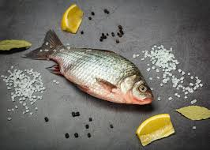

Fish

Fish meat, also known as fish flesh, is the edible muscle tissue of fish, a good source of protein, vitamins, and other nutrients.
While often simply referred to as "fish," specific types of fish or preparation methods may have their own names for the meat, similar to how different cuts of meat from other animals are named, according to Quora.